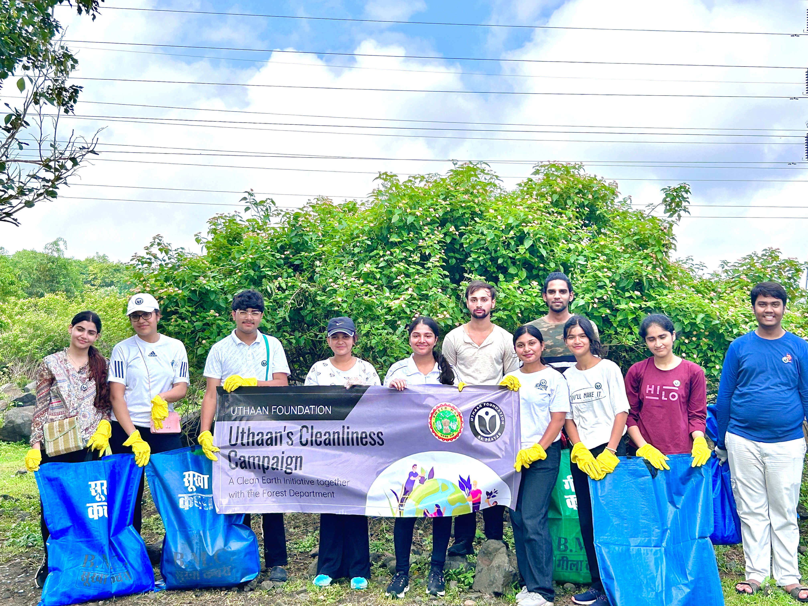
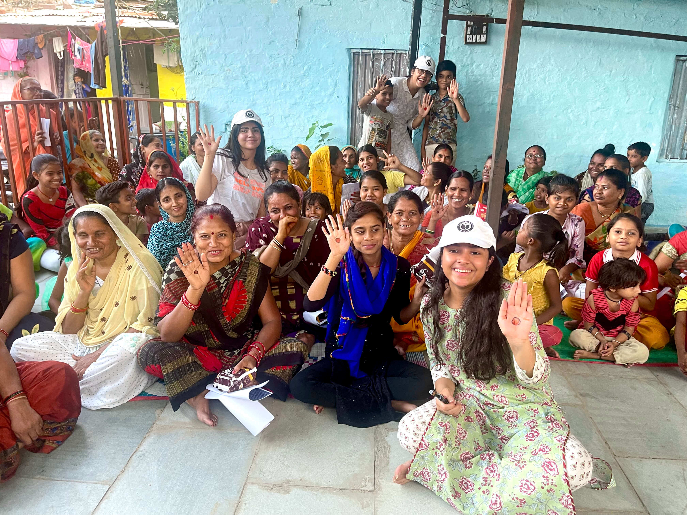
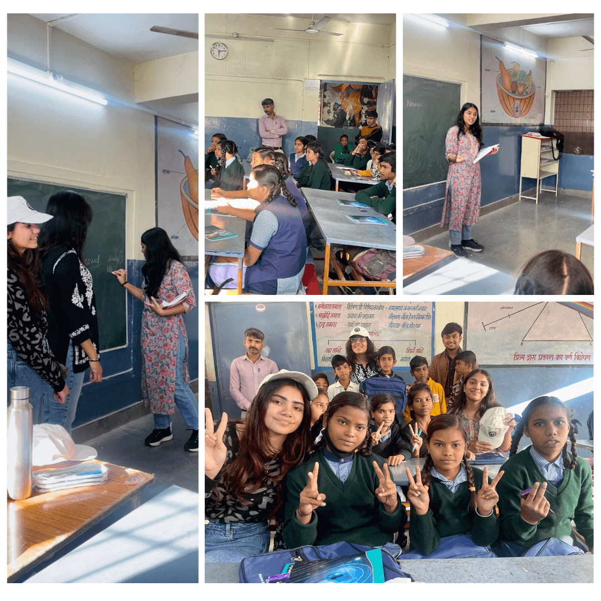
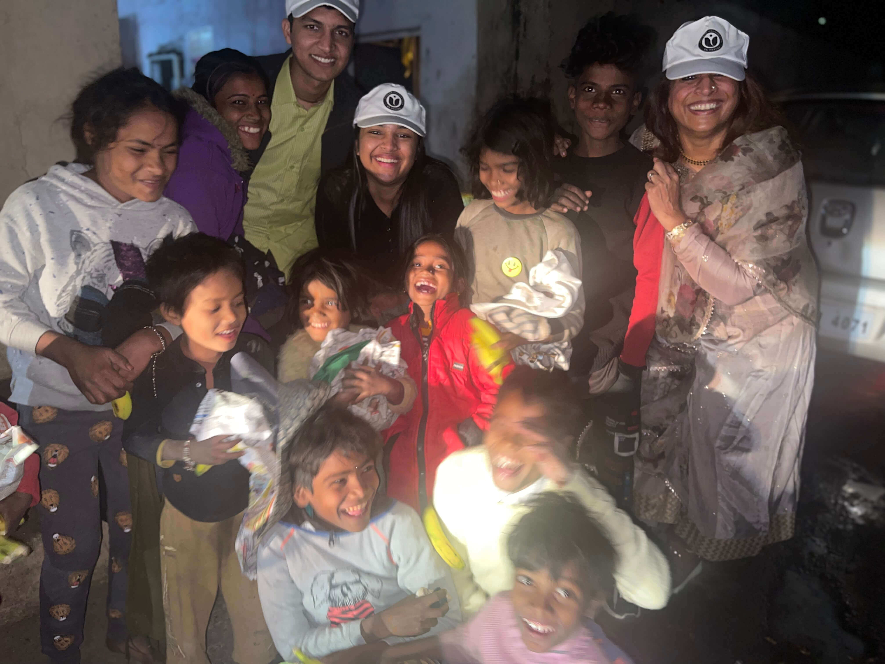
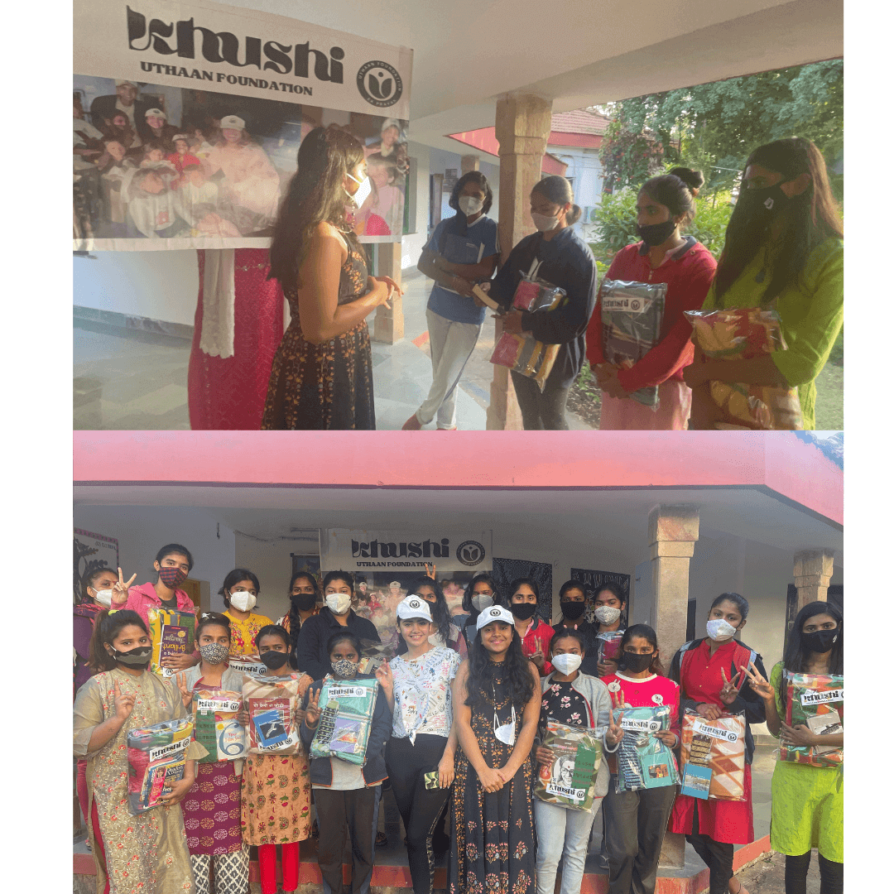
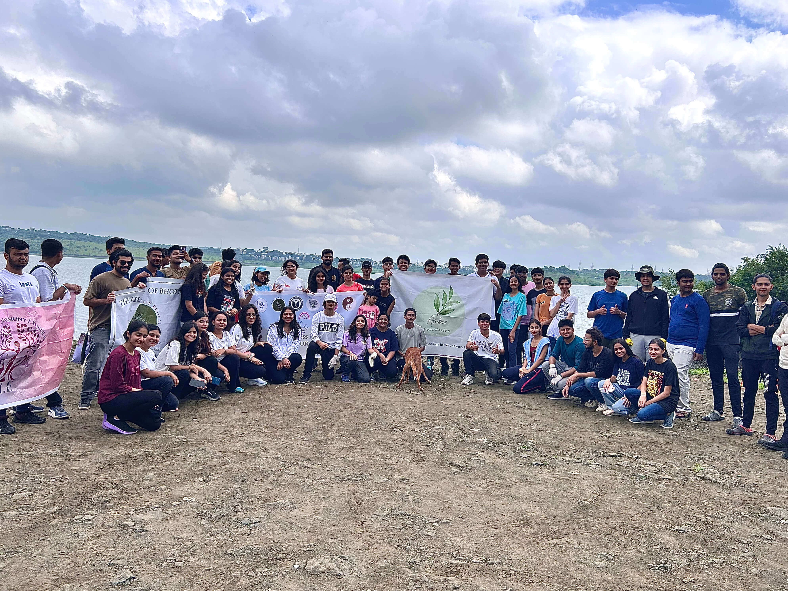
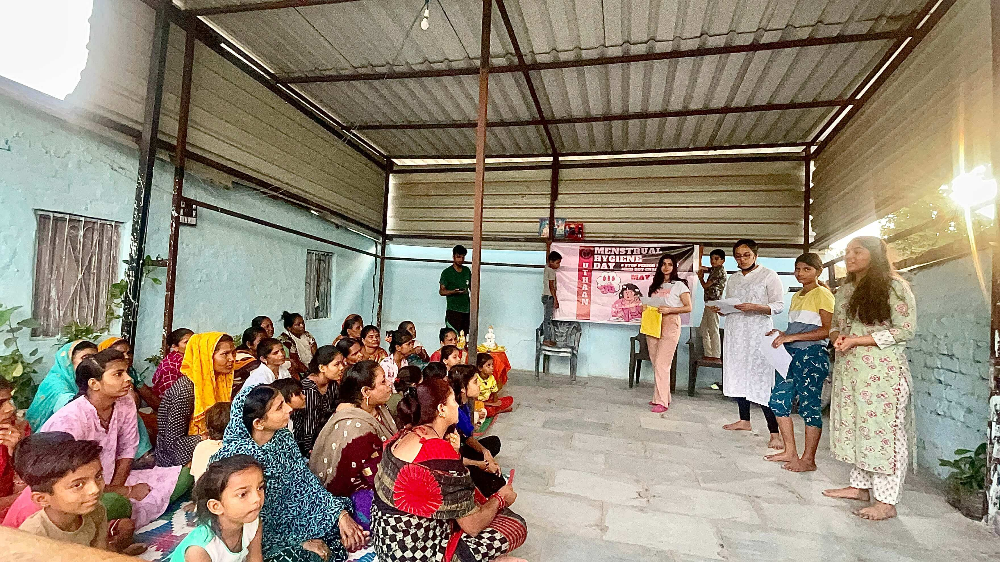

Arayna Saxena
Major: Computer Science
Year: First-Year
From: India
In the past I have demonstrated great involvement in community outreach through my NGO: Uthaan Foundation
Visit Website







Founded Uthaan: A Non-Governmental Organization registered with the Government of India to provide upliftment, education, empowerment & assistance.
- Leading a team of 20+ members and 50+ volunteers.
- Established connections with government schools to support STEM education and connect volunteers as support teachers.
- Conducted workshops and awareness sessions for underprivileged communities.
- Impacted over 5000+ individuals through these initiatives.